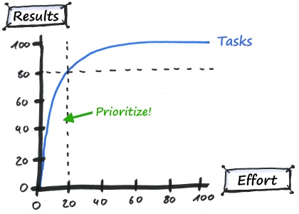

Combined Factors - Summary
Contents
I picked up the factor portfolio idea about one years ago from a series of AQR papers. The idea is intuitive and simple, and within a couple of months I manage to replicate the results. There are quite a few practical considerations when I decide to implement it for real. Usually when I need to deal with multiple designe considerations, the most important thing is to decide the 'maganitude' or 'significance' of each choice towards final results. 20/80 rules applies here, i.e. the top few factor determines the majority of results variations.
Here is a list of things I found surprising after I went through this exercise.
Surprises
- [Diversification] in factors is important. Individual factor's signal is pretty weak, to the order of 0.3~0.5 signal to noise ratio, but by combining all those weak signals, I can achieve a strong signal to the magnitude of above 1.0 signal-to-noise ratio.
- [Leverage] Between signal and risk, the first consideration should be risk. As Berkshire's portfolio demonstrated, there is a lot to be gain from take a moderate leverage. The relationship between risk and return is one of most simple, yet one of the most under-appreciated result in investment community.
- [Transaction cost] is surprisingly less than funding cost, and rolling yield in futures contracts is very important.
- optimization is important. Even though a no brainer equal weighted factor loading performed reasonably well, factor loading optimization could improve the performance by 200 bps @ 15% volatility level.
- [Concentration] Good signal strength only presents in the very top tier of the candidates. There is another 20/80 rules here, I want that thin layer of crème de la crème. Avoid dilution is more important than things such as using sector weight or normalize momentum signal. For the same reason fillts give me more securities to select, therefore improved the performance meaningfully.
- In terms of individual factors, SML & BAB is big surprise. HML behaved very different from the rest. MOM and QUAL is the most reliable.
Most important thing
The biggest risk factor in transportation system is the human factor. The same applies for investment. Its unintuitive to give up control, human emotion will urge us to intervene exactly at point where we should not. If I allow discretion, instead of abiding guidelines concluded from study the historical portfolio behavior by observing the data, it would decrease the portfolio performance by 1~2% per annual in the long run.
